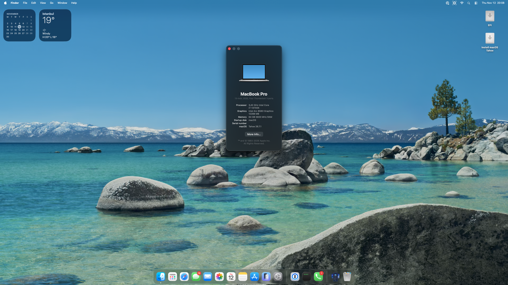
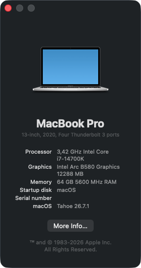
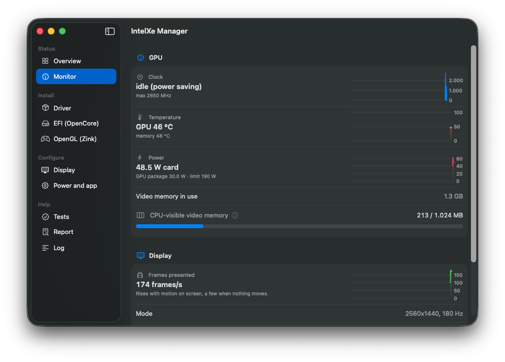
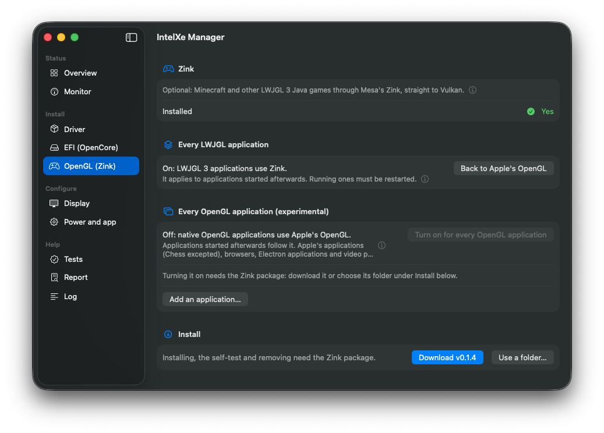

Your Intel Arc card,
running macOS.Intel Arc kartınız,
macOS'ta çalışıyor.
A Metal driver for the Arc B580 and B570 on macOS 26 Tahoe. It brings the GPU up the way Linux's xe driver does, runs Mesa's Vulkan driver on top and implements Metal on Vulkan: the desktop, Metal apps and games, Safari with WebGPU and hardware video run on the card.
macOS 26 Tahoe'da Arc B580 ve B570 için bir Metal sürücüsü. GPU'yu Linux'un xe sürücüsü gibi ayağa kaldırıyor, üstünde Mesa'nın Vulkan sürücüsünü çalıştırıyor ve Metal'i Vulkan üzerinde gerçekleştiriyor: masaüstü, Metal uygulamaları ve oyunlar, WebGPU'lu Safari ve donanım videosu kartta çalışıyor.
Tested on one PC with one Arc B580. Keep a USB stick with a working OpenCore EFI before you try it.Tek bir PC'de, tek bir Arc B580 ile test edildi. Denemeden önce çalışan bir OpenCore EFI'yi USB bellekte hazır tutun.


A real driver, not a shim.Gerçek bir sürücü, yama değil.
Everything below runs on the card on macOS 26.7.1.Aşağıdakilerin hepsi macOS 26.7.1'de kartta çalışıyor.
The desktopMasaüstü
WindowServer composites on the GPU with real page flips: transparency, blur and animations accelerated. All modes of one DisplayPort monitor, VRR, HiDPI, hardware cursor, sleep and wake.WindowServer gerçek sayfa çevirmeleriyle GPU'da birleştiriyor: saydamlık, bulanıklık ve animasyonlar hızlandırılmış. Tek DisplayPort monitörün bütün modları, VRR, HiDPI, donanım imleci, uyku ve uyanma.
Metal
Apps, Chrome and games; the Metal 3 feature set including ray tracing. Translated shaders are cached on disk and survive reboots and driver updates.Uygulamalar, Chrome ve oyunlar; ışın izleme dahil Metal 3 özellik seti. Çevrilen gölgelendiriciler diskte saklanıyor; yeniden başlatma ve sürücü güncellemesinden sonra da duruyor.
Safari and WebGPUSafari ve WebGPU
Safari on the GPU, with WebGPU: the webgpu-samples and three.js pages draw, and a sweep of 41 WebGPU features passes 40 (WebKit does not offer the 41st, timestamps, on Intel GPUs).Safari GPU'da, WebGPU ile: webgpu-samples ve three.js sayfaları çiziyor; 41 WebGPU özelliğini deneyen tarama 40'ını geçiyor (41.'si zaman damgaları; WebKit onu Intel GPU'larda sunmuyor).
Hardware videoDonanım videosu
VideoToolbox decoders for H.264, HEVC, AV1 and VP9 and encoders for H.264, HEVC and AV1 on the card, for QuickTime, OBS, HandBrake and ffmpeg.Kartta H.264, HEVC, AV1 ve VP9 için VideoToolbox çözücüleri; H.264, HEVC ve AV1 için kodlayıcılar. QuickTime, OBS, HandBrake ve ffmpeg bunları kullanıyor.
OpenGL through ZinkZink üzerinden OpenGL
Minecraft Java and other LWJGL games through Mesa's Zink straight to Vulkan (1400–1500 fps without shaders, against 700–1000 on Windows); native OpenGL apps as an experimental switch.Minecraft Java ve diğer LWJGL oyunları Mesa'nın Zink'i ile doğrudan Vulkan'a (shader'sız 1400–1500 fps; Windows'ta 700–1000); yerel OpenGL uygulamaları deneysel bir anahtarla.
Recovers from hangsTakılmadan toparlanma
A hung job resets only its engine; the desktop keeps running. A boot guard falls back to safe settings after failed boots.Takılan bir iş yalnızca kendi motorunu sıfırlıyor; masaüstü çalışmaya devam ediyor. Bir açılış koruması, başarısız açılışlardan sonra güvenli ayarlara dönüyor.
Hybrid Intel CPUsHibrit Intel işlemciler
HybridPM.kext lets macOS run the P-cores of 12th–14th gen CPUs at full clock, which makes the driver's CPU work, and so the GPU, faster.HybridPM.kext, macOS'un 12.–14. nesil işlemcilerin P çekirdeklerini tam hızda çalıştırmasını sağlıyor; sürücünün işlemci işi, dolayısıyla GPU da hızlanıyor.
Signed releasesİmzalı sürümler
Each release's list of checksums is signed with the project's key; the app installs a download only when the signature checks out.Her sürümün sağlama listesi projenin anahtarıyla imzalı; uygulama indirdiği bir sürümü yalnızca imza doğrulanınca kuruyor.
From a fresh install to a tested driver.Temiz kurulumdan test edilmiş sürücüye.
A setup assistant walks through every stage, shows each change before it asks for your password, backs up and can undo. Then it stays useful: a Monitor page, GPU tests, Safari, Zink, HiDPI and diagnostics reports.Bir kurulum yardımcısı her aşamada yol gösteriyor; parola istemeden önce her değişikliği gösteriyor, yedek alıyor ve geri alabiliyor. Sonra da işe yarıyor: İzleme sayfası, GPU testleri, Safari, Zink, HiDPI ve tanı raporları.




The same card, the same PC.Aynı kart, aynı PC.
| Windows (Intel) | macOS (this driverbu sürücü) | |
|---|---|---|
| Geekbench 7 GPU | Vulkan 111 056 · OpenCL 108 544 | Metal 95.7k · OpenCL 85.5k |
| Video decode up to 4K4K'ya kadar video çözme | referencereferans | bit-exact and fasterbit bit aynı ve daha hızlı |
| Encode quality against Intel QSVIntel QSV'ye göre kodlama kalitesi | referencereferans | better for HEVC and AV1; H.264 within 1.5%HEVC ve AV1'de daha iyi; H.264 %1,5 içinde |
| Minecraft Java, Sodium + Iris + BSLMinecraft Java, Sodium + Iris + BSL | 214–218 fps | 197–205 fps (Zink) |
| The same without a shader packShader paketi olmadan | 700–1000 fps | 1400–1500 fps (Zink) |
Measured on one PC (Z790, i7-14700K, Arc B580). Full tables in the repository.Tek bir PC'de ölçüldü (Z790, i7-14700K, Arc B580). Tüm tablolar depoda.
What is tested, and what is not.Ne test edildi, ne edilmedi.
"Validated" means it ran here, on real hardware. Everything else says so."Doğrulandı" burada, gerçek donanımda çalıştı demek. Gerisi de ne olduğunu açıkça söylüyor.
Intel Arc B580 8086:E20B
- The test machine: Z790 board, Core i7-14700K, macOS 26.7.1, OpenCoreTest makinesi: Z790 anakart, Core i7-14700K, macOS 26.7.1, OpenCore
- One DisplayPort monitor, 2560×1440 at 180 Hz with VRRTek DisplayPort monitör, 2560×1440, 180 Hz, VRR
- Every release runs here before it is publishedHer sürüm yayımlanmadan önce burada çalışıyor
Intel Arc B570 · Pro B60 · Pro B50 8086:E20C · E211 · E212
- The same chip as the B580: the B570 accepted since 0.1.4, the Pro B60 and Pro B50 from 0.1.5B580 ile aynı çip: B570 0.1.4'ten, Pro B60 ve Pro B50 0.1.5'ten beri kabul ediliyor
- Not run by us yet: no user report so farBizim tarafımızda çalıştırılmadı: henüz kullanıcı raporu yok
- Yours works, or does not? Tell usSizinki çalışıyor mu, çalışmıyor mu? Bize yazın
Other Intel GPUsDiğer Intel GPU'lar
- Arc A-series, Arc in laptops, Core Ultra and older integrated graphicsArc A serisi, dizüstülerdeki Arc, Core Ultra ve eski dahili grafikler
- The kernel driver already describes them as Linux's xe does and refuses them at startÇekirdek sürücü onları Linux'un xe'si gibi tanımlıyor ve açılışta reddediyor
- Help us bring yours upKartınızın getirilmesine yardım edin
What we ran, and how it went.Neyi çalıştırdık, nasıl gitti.
| AppUygulama | ThroughYol | ResultSonuç |
|---|---|---|
| Safari — WebGPU | Metal | ✓ webgpu-samples 8 of 8; a sweep of 41 WebGPU features passes 40webgpu-samples 8'de 8; 41 WebGPU özelliğinin 40'ı geçiyor |
| Safari — WebGL | Metal | ✓ WebGL 1 and 2WebGL 1 ve 2 |
| Chrome | Metal (ANGLE) | ✓ every chrome://gpu item in hardware; WebGL pages at 180 fpschrome://gpu'daki her öğe donanımda; WebGL sayfaları 180 fps |
| Geekbench 7 | Metal · OpenCL | ✓ 95.7k · 85.5k |
| Minecraft Java 1.21.1 | Zink | ✓ 1400–1500 fps without shaders; 197–205 fps with Sodium + Iris + BSLshader'sız 1400–1500 fps; Sodium + Iris + BSL ile 197–205 fps |
| Minecraft Java 1.21.1 | Apple's OpenGLApple'ın OpenGL'i | ~ runs, but far slower than Zinkçalışıyor ama Zink'ten çok yavaş |
| GZDoom 4.14 | Zink, per appZink, uygulama başına | ✓ ~1910 fps, against ~1600 on Apple's OpenGL~1910 fps; Apple'ın OpenGL'inde ~1600 |
| ChessSatranç | Zink, every-app switchZink, tüm uygulamalar anahtarı | ✓ draws correctlydoğru çiziyor |
| QuickTime | VideoToolbox | ✓ playback with hardware decodingdonanım çözmeli oynatma |
| OBS · HandBrake | VideoToolbox | ✓ hardware H.264, HEVC and AV1 encodersdonanım H.264, HEVC ve AV1 kodlayıcıları |
| Screen recordingEkran kaydı | VideoToolbox | ✓ the first recording pauses about 5 s once (shader compile)ilk kayıt bir kez ~5 sn duraklıyor (gölgelendirici derleme) |
| Wine | Vulkan | ~ D3D11, D3D12 and Vulkan correct; 32-bit programs (WoW64) do not runD3D11, D3D12 ve Vulkan doğru; 32-bit programlar (WoW64) çalışmıyor |
| Vulkan CTS 1.4 | Vulkan | ✓ 1.77 M of 3.15 M cases pass, no hangs in 6.2 hours3,15 M vakanın 1,77 M'si geçiyor, 6,2 saatte takılma yok |
Ran something else? Tell us in an issue: what worked and what did not.Başka bir şey mi çalıştırdınız? Bir issue'da yazın: ne çalıştı, ne çalışmadı.
What you need.Neye ihtiyacınız var.
- A PC that OpenCore boots macOS on: Intel CPU, Above 4G decoding and Resizable BAR on.OpenCore ile macOS açabilen bir PC: Intel işlemci, Above 4G decoding ve Resizable BAR açık.
- An Arc B580, B570, Pro B60 or Pro B50 with one monitor on its DisplayPort. The B570 and the Pro cards are supported but untested by us.Bir Arc B580, B570, Pro B60 ya da Pro B50 ve DisplayPort'una takılı tek monitör. B570 ve Pro kartlar destekleniyor ama bizim tarafımızda test edilmedi.
- macOS 26 Tahoe (tested on 26.7.1). macOS 15 Sequoia is built from the same sources, not re-tested.macOS 26 Tahoe (26.7.1'de test edildi). macOS 15 Sequoia aynı kaynaktan derleniyor, yeniden test edilmedi.
- A USB stick with a working OpenCore EFI, and your firmware's boot-menu key.Çalışan bir OpenCore EFI'si olan USB bellek ve anakartınızın açılış menüsü tuşu.
- Any computer with Windows, Linux or macOS to prepare it. No Mac is needed; no integrated GPU either.Hazırlamak için Windows, Linux ya da macOS'lu herhangi bir bilgisayar. Mac gerekmiyor; dahili GPU da gerekmiyor.
Four stages.Dört aşama.
Install macOS with a plain OpenCore EFIDüz bir OpenCore EFI ile macOS'u kurunDortania
Build the EFI for your board as Dortania's guide describes; the test machine's sample is in the repository. The installer runs on the card's firmware output, slow but working.EFI'yi anakartınız için Dortania rehberindeki gibi hazırlayın; test makinesinin örneği depoda. Kurulum, kartın firmware çıkışında çalışır: yavaş ama çalışıyor.
Prepare OpenCoreOpenCore'u hazırlayınapp or Windowsuygulama ya da Windows
Relaxed SIP, the AMFI boot-arg, two quirks and one console setting in config.plist. IntelXe Manager does it in the EFI you booted from; from Windows, IntelXe Manager for Windows (or the IntelXe-EFI.ps1 script). Restart.config.plist'te gevşetilmiş SIP, AMFI boot-arg'ı, iki quirk ve bir konsol ayarı. IntelXe Manager bunu açtığınız EFI'de yapıyor; Windows'tan Windows için IntelXe Manager (ya da IntelXe-EFI.ps1 betiği). Yeniden başlatın.
Install the driverSürücüyü kurunIntelXe Manager
The app downloads the package for your macOS, checks the release's signature, backs up what it replaces and installs it. Do not restart yet.Uygulama macOS'unuza uygun paketi indiriyor, sürümün imzasını denetliyor, değiştirdiklerini yedekliyor ve kuruyor. Henüz yeniden başlatmayın.
Add the kext to the EFI and restartKext'i EFI'ye ekleyin ve yeniden başlatınIntelXe Manager
IntelXe.kext and SSDT-ARCOFF, the table adapted to your card's ACPI path (and HybridPM.kext on a 12th–14th gen hybrid CPU). After the restart the desktop moves at your monitor's refresh rate.IntelXe.kext ve kartınızın ACPI yoluna uyarlanmış SSDT-ARCOFF (12.–14. nesil hibrit işlemcide HybridPM.kext de). Yeniden başlattıktan sonra masaüstü monitörünüzün yenileme hızında akıyor.
The full install guideTam kurulum rehberi The appsUygulamalar
What is not there yet.Henüz olmayanlar.
1 GB of 12 GB is CPU-visible12 GB'ın 1 GB'ı CPU'ya açık
macOS cannot map a larger BAR. The driver keeps that window for what needs it, but many GPU-heavy apps at once can still fill it; the app's Monitor page shows how full it is.macOS daha büyük bir BAR'ı eşleyemiyor. Sürücü bu pencereyi ihtiyacı olana ayırıyor, ama çok sayıda GPU'yu yoğun kullanan uygulama yine de doldurabilir; uygulamanın İzleme sayfası doluluğu gösteriyor.
One monitorTek monitör
One DisplayPort monitor on the card; a second display is not supported yet.Kartta tek DisplayPort monitör; ikinci ekran henüz desteklenmiyor.
Relaxed securityGevşetilmiş güvenlik
Unsigned kexts need relaxed SIP and AMFI, and Safari on the GPU needs a copy of the driver on the system volume (a macOS update removes it; the app notices and can put it back).İmzasız kext'ler gevşetilmiş SIP ve AMFI istiyor; GPU'da Safari için sürücünün sistem diskinde bir kopyası gerekiyor (macOS güncellemesi onu siliyor; uygulama bunu fark edip geri koyabiliyor).
After loginGirişten sonra
The first seconds after login are less smooth than later, and the login screen shows a light grey band after a restart.Girişten sonraki ilk saniyeler sonrasından daha az akıcı; yeniden başlattıktan sonra giriş ekranında açık gri bir şerit görünüyor.
Some speed held backBiraz hız geride tutuluyor
The GuC low-latency hint, which keeps the GPU clock up for apps, stays opt-in while a GPU fault after a long idle is open. Direct submission is on by default from 0.1.5 (Geekbench Metal 97.5-98.9k, OpenCL 93.3-94.0k on 0.1.4 with it on).Uygulamalar için GPU saatini yüksek tutan GuC düşük gecikme ipucu, uzun bir boşta kalmanın ardından gelen GPU hatası çözülene kadar isteğe bağlı. Doğrudan gönderim 0.1.5'ten itibaren varsayılan olarak açık (0.1.4'te açıkken Geekbench Metal 97,5-98,9k, OpenCL 93,3-94,0k).
Tested on one machineTek makinede test edildi
One PC, one B580. The B570, and an EFI that the Windows app or script prepared on a PC that then boots, are untested: reports are welcome.Tek PC, tek B580. B570 ve Windows uygulamasının ya da betiğinin hazırladığı EFI ile gerçek bir açılış test edilmedi: raporlarınızı bekliyoruz.
Problems are fixed from logs.Sorunlar loglardan çözülüyor.
Make a report, then open an issueRapor oluşturun, sonra bir issue açın
IntelXe Manager's Report page collects what a problem needs: the driver's logs, the GPU's state, a panic if there was one. It removes serial numbers, UUIDs, MAC addresses and user names first. Attach the report to an issue with the bug template; please do not post raw system reports.IntelXe Manager'ın Rapor sayfası bir sorunun gerektirdiklerini topluyor: sürücünün logları, GPU'nun durumu, varsa bir panik. Önce seri numaralarını, UUID'leri, MAC adreslerini ve kullanıcı adlarını çıkarıyor. Raporu hata şablonuyla açacağınız bir issue'ya ekleyin; lütfen ham sistem raporlarını paylaşmayın.
If the PC does not come upPC açılmazsa
Boot from the USB stick with your working EFI, or select the OpenCore entry and hold Shift for safe mode. Then undo the driver (the app's Driver page, or sudo ./install.sh --undo) and the last EFI change (the EFI page). After two failed boots a boot guard starts macOS with safe settings by itself.Çalışan EFI'nizin olduğu USB bellekten açın ya da OpenCore girişini seçip güvenli mod için Shift'e basılı tutun. Sonra sürücüyü (uygulamanın Sürücü sayfası ya da sudo ./install.sh --undo) ve son EFI değişikliğini (EFI sayfası) geri alın. İki başarısız açılıştan sonra bir açılış koruması macOS'u kendiliğinden güvenli ayarlarla açıyor.
Your GPU is not supported? Your reports get it there.GPU'nuz desteklenmiyor mu? Raporlarınız onu getirir.
Bringing up a GPU needs to know what it is, how Linux drives it and how it answers. You have the hardware; three reports tell us.Bir GPU'yu ayağa kaldırmak, onun ne olduğunu, Linux'un onu nasıl sürdüğünü ve nasıl yanıt verdiğini bilmeyi gerektiriyor. Donanım sizde; üç rapor bize anlatıyor.
A Linux report, from a live USBCanlı bir USB'den Linux raporuthe important oneen önemlisi
Ubuntu 25.04+ or Fedora 41+ is enough. sudo sh collect-linux.sh --acpi --bench records what Linux's own driver finds and programs on your GPU.Ubuntu 25.04+ ya da Fedora 41+ yeterli. sudo sh collect-linux.sh --acpi --bench Linux'un kendi sürücüsünün GPU'nuzda bulduğunu ve programladığını kaydediyor.
A macOS report, if macOS boots theremacOS açılıyorsa bir macOS raporu
sh collect-macos.sh --probe, with any graphics. With the boot-arg xeprobe=0x<device>, IntelXe.kext's staged probe (XeProbe) also answers step by step whether the GPU identifies itself, wakes, loads its GuC firmware and runs a command, each step only when you ask. It ran on the B580 and on a Raptor Lake integrated GPU.Herhangi bir grafikle sh collect-macos.sh --probe. xeprobe=0x<aygıt> boot-arg'ıyla IntelXe.kext'in aşamalı yoklaması (XeProbe) da adım adım GPU'nun kendini tanıtıp tanıtmadığını, uyanıp uyanmadığını, GuC firmware'ini yükleyip yüklemediğini ve bir komut çalıştırıp çalıştırmadığını yanıtlıyor; her adım yalnızca siz isteyince. B580'de ve bir Raptor Lake dahili GPU'sunda çalıştı.
Open a hardware issueBir donanım issue'su açın
The form "Support for my Intel GPU" asks for the report IDs. The scripts upload nothing and remove serial numbers, UUIDs and MAC addresses first."Support for my Intel GPU" formu rapor kimliklerini soruyor. Betikler hiçbir şey yüklemiyor; önce seri numaralarını, UUID'leri ve MAC adreslerini çıkarıyor.
Ask for my GPUGPU'm için başvur The report scriptsRapor betikleri XeProbe
Questions, answered.Sorular, yanıtlar.
Is this an official Intel or Apple driver?Bu resmi bir Intel ya da Apple sürücüsü mü?
No. It is an independent project, not affiliated with Intel, Apple or NullMoth Systems.Hayır. Bağımsız bir proje; Intel, Apple ya da NullMoth Systems ile bağlantısı yok.
Will my Arc A-series card or integrated graphics work?Arc A serisi kartım ya da dahili grafik çalışır mı?
Not yet. Only the B580 and the B570 are supported. The kernel driver already describes the other families the way Linux does, and the repository lists what each one still needs.Henüz değil. Yalnızca B580 ve B570 destekleniyor. Çekirdek sürücü diğer aileleri Linux'taki gibi tanımlıyor; depoda her birinin neye ihtiyaç duyduğu listeli.
Is it safe?Güvenli mi?
It changes how your PC boots macOS and needs relaxed security. Every change is backed up and can be undone, and a boot guard falls back to safe settings, but keep a USB stick with a working EFI.PC'nizin macOS'u nasıl açtığını değiştiriyor ve gevşetilmiş güvenlik istiyor. Her değişiklik yedekleniyor ve geri alınabiliyor, bir açılış koruması da güvenli ayarlara dönüyor; yine de çalışan bir EFI'yi USB bellekte tutun.
Do I need Windows or a Mac to install it?Kurmak için Windows ya da Mac gerekir mi?
No. Any computer can prepare the OpenCore EFI; after macOS is installed, IntelXe Manager does the rest on the PC. On Windows, IntelXe Manager for Windows (or the IntelXe-EFI.ps1 script) can make the EFI changes too.Hayır. OpenCore EFI'sini herhangi bir bilgisayar hazırlayabilir; macOS kurulduktan sonra gerisini IntelXe Manager PC'de yapıyor. Windows'ta EFI değişikliklerini Windows için IntelXe Manager (ya da IntelXe-EFI.ps1 betiği) da yapabiliyor.
How was it made?Nasıl yapıldı?
With AI assistance: the code (the kernel driver, the changes to nullmoth and Mesa, the tools and the documentation) was written by Anthropic's Claude under the direction of the maintainer, who tests every build on the real hardware. The code it builds on (nullmoth, Mesa, Linux, FFmpeg) keeps its original authors.Yapay zekâ desteğiyle: kod (çekirdek sürücü, nullmoth ve Mesa değişiklikleri, araçlar ve belgeler) her derlemeyi gerçek donanımda test eden proje sahibinin yönlendirmesiyle Anthropic'in Claude modeli tarafından yazıldı. Üzerine kurulduğu kod (nullmoth, Mesa, Linux, FFmpeg) kendi yazarlarına ait.
ReleaseSürüm 0.1.6
Start with the app: it downloads the right package for your macOS itself.Uygulamayla başlayın: macOS'unuza uygun paketi kendisi indiriyor.
IntelXe Manager
The app: setup assistant, install, EFI, updates. macOS on the PC.Uygulama: kurulum yardımcısı, kurulum, EFI, güncellemeler. PC'deki macOS'ta.
4.1 MB intel-gpu-macos-driver-0.1.6-tahoe.zipDriver for TahoeTahoe için sürücü
Everything for macOS 26, with install.sh and efi.sh for Terminal.macOS 26 için her şey; Terminal için install.sh ve efi.sh ile.
126 MB intel-gpu-macos-driver-0.1.6-efi.zipOpenCore piecesOpenCore parçaları
IntelXe.kext, SSDT-ARCOFF, HybridPM.kext and the Windows EFI script. Any system.IntelXe.kext, SSDT-ARCOFF, HybridPM.kext ve Windows EFI betiği. Her sistemde.
1.9 MB IntelXeManager-0.1.6-win-x64.zipIntelXe Manager for WindowsWindows için IntelXe Manager
Stages 2 and 4 from Windows, with plans, backups and undo. Not code-signed: check its SHA-256 (guide, From Windows).Windows'tan 2. ve 4. aşamalar; planlar, yedekler ve geri alma ile. Kod imzası yok: SHA-256'sını denetleyin (rehber, Windows'tan).
66 MB intel-gpu-macos-driver-0.1.6-zink-gl.zipOpenGL through ZinkZink üzerinden OpenGL
Optional: Minecraft Java and other LWJGL games, native OpenGL apps.İsteğe bağlı: Minecraft Java ve diğer LWJGL oyunları, yerel OpenGL uygulamaları.
6.0 MB.sha256) and their signature (.sha256.sig). To check the signature by hand:
Sürüm sayfasında ayrıca: macOS 15 Sequoia paketi, sağlama toplamları (.sha256) ve imzaları (.sha256.sig). İmzayı elle denetlemek için:
swift release/signing.swift verify PZGslAxn39LtMGgkWHbn9MzK8nc+IeM2TrvJpbifZXA= \
intel-gpu-macos-driver-0.1.6.sha256 intel-gpu-macos-driver-0.1.6.sha256.sig